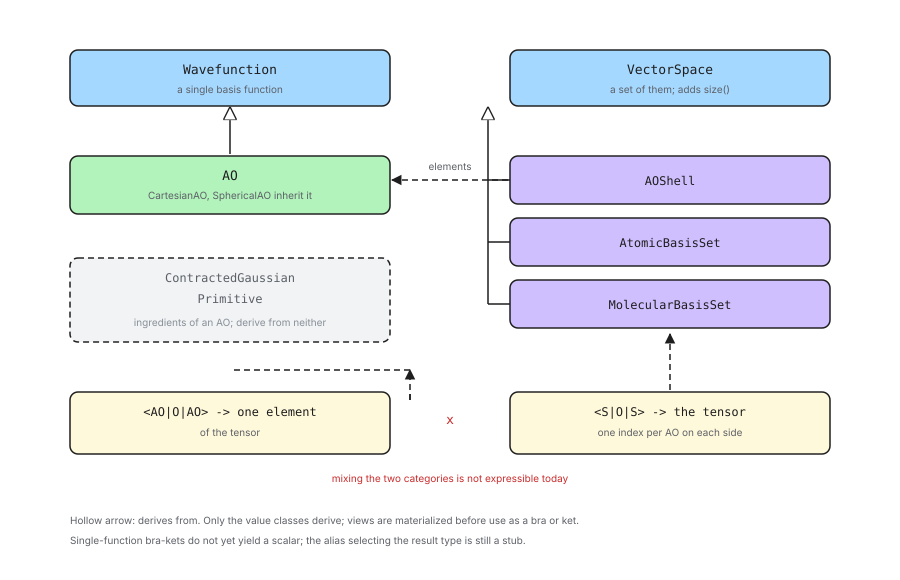

Designing Matrix Elements over the Basis Set
This section contains notes on how the classes of
Designing the AO Class Hierarchy participate in Chemist’s
quantum_mechanics component, so that matrix elements can be requested over
them.
What are we trying to enable?
Chemist expresses a requested quantity in Dirac notation, as a BraKet
object templated on the types of the bra, the operator, and the ket. Evaluating
such an object is somebody else’s job; constructing one is a way of saying
what is wanted.
What we want is to be able to say it at every level at which it is meaningful. The overlap of two AOs, of two shells, of two centers, or of two whole basis sets are all things a caller might reasonably ask for, and they should all be expressible the same way, without the caller first having to wrap anything.
Previous Solution: the Adapter
Historically the AO basis set classes were introduced before the
quantum_mechanics component was designed, and the two were connected by
an adapter class, wavefunction::AOs. In refactoring the AO basis set classes
we want to avoid the need for an adapter.
Matrix Element Considerations
Topics in this section were considered and ultimately were addressed by the design.
- One function or a set of them
A class participates by being either a single basis function or a set of them, and which it is determines which base class it derives from.
An AO is a single basis function.
A shell, an atomic basis set, and a molecular basis set are each a set of functions.
The split is a property of the class, not a choice, so it should not be configurable.
- The AO is the smallest unit
Not everything in the hierarchy is a basis function. A primitive and a contracted Gaussian are ingredients of one.
Neither has an angular part, so neither denotes a particular function until it is paired with one. Admitting them as bras and kets would mean inventing a rule for which function they stand for, and that rule would be an artifact of the notation rather than anything physical.
The AO is also the smallest thing the rest of the library indexes by, as Designing the AO Class Hierarchy argues, so it is the natural floor for a notation whose purpose is to name tensor elements.
So the radial classes take part in building AOs and nothing more.
- No adapter class
Following from One function or a set of them, the classes should derive from the base classes themselves.
A caller should be able to hand a shell, or an AO, straight to the notation.
Introducing a parallel set of wrapper types would double the number of classes and reintroduce the problem the adapter already has: the wrapper participates and the thing it wraps does not.
- A bra-ket owns its state
A
BraKetis a value which can outlive the expression that produced it.Whatever occupies the bra or ket slot must own what it describes.
Per Value and view semantics most of the hierarchy also has aliasing forms, and those are exactly the wrong thing to store in a long-lived object.
Out of Scope
Topics in this section were considered, but do not play a role in the current design.
- Matrix elements over the radial classes
Per The AO is the smallest unit,
PrimitiveandContractedGaussiando not participate. Should a use case appear which genuinely wants a bra-ket over one of them, the mechanism is the same as forAO— derive fromWavefunctionand supply the two hooks — but it would also have to settle what function the object denotes, which is the reason it is excluded now rather than any technical obstacle.- Evaluating the matrix elements
Constructing a
BraKetstates what is wanted. Producing a number is the business of whichever module claims the resulting property type, and is not designed here.- Mixing the two categories
Chemist’s existing traits admit a bra-ket only when the bra and the ket are both single functions or both sets. Asking for one AO against a whole basis set — a row of a matrix — is not expressible today, and making it so would mean changing the
quantum_mechanicscomponent rather than the basis set component.- The scalar result type
As noted below, single-function bra-kets do not presently produce a scalar. Fixing that is a change to
quantum_mechanics.
Matrix Element Design

Fig. 10 Which base class each level of the hierarchy derives from, and what the resulting bra-kets denote.
Fig. 10 summarizes the design.
Which class derives from which base
Per One function or a set of them and The AO is the smallest unit, the classes fall into three groups rather than two.
AO derives from Wavefunction, and is the only class which does.
The sets derive from VectorSpace:
AOShell, and henceCCAShelland its siblingsAtomicBasisSetMolecularBasisSet
Primitive and ContractedGaussian derive from neither. They remain what
Designing the AO Class Hierarchy makes them: the parts an AO is
built from.
VectorSpace requires a size, which is the number of AOs: the AOs in the
shell, the AOs on the center, or the AOs in the basis set respectively. This is
the same quantity the existing adapter forwards, now supplied by the object
itself.
What the base classes ask for
Both base classes ask their derived classes for the same two things: a way to
copy themselves polymorphically, and a way to compare themselves to another
object of the same type. VectorSpace adds size.
Chemist already factors those first two out. detail_::WavefunctionImpl is a
CRTP helper which implements both in terms of the derived class’s copy
constructor and operator==, and VectorSpace offers an equivalent
comparison helper. The basis set classes already have both a copy constructor
and an operator==, so deriving through those helpers costs nothing beyond
the declaration.
Values, not views
Per A bra-ket owns its state, only the value classes derive from the base classes. The view classes do not.
This is deliberate. A BraKet stores its bra and ket, and a view is a
handle to storage owned by something else; a bra-ket holding a view would be
valid only as long as whatever it aliases. Requiring a value in the bra and ket
slots makes that lifetime question disappear.
The cost is that using a view as a bra or ket means materializing it first, which copies. That is the right default: the copy is explicit, it is local to constructing the bra-ket, and the alternative is a dangling reference that nothing would catch.
Summary
- One function or a set of them
AOderives fromWavefunction;AOShell,AtomicBasisSet, andMolecularBasisSetderive fromVectorSpace, whosesizeis the number of AOs. AnAOShellis therefore aVectorSpacewhose elements areWavefunctionobjects.- The AO is the smallest unit
PrimitiveandContractedGaussianderive from neither. They are ingredients of a basis function rather than basis functions, and admitting them would require stipulating which function they stand for.- No adapter class
The classes derive from the base classes directly, so the
wavefunction::AOsadapter is removed rather than replaced, and a shell or an AO can be handed to the notation as-is.- A bra-ket owns its state
Only the value classes derive; views are materialized before being used as a bra or a ket, so a bra-ket never outlives what it describes.